Unix, GNU/Linux and Terminal
What is Unix?
- UNIX is a computer operating system.
- It was first developed in 1969 at Bell Labs.
- In 1972, the Unix code was rewritten with the new C programming language.
(Dennis, Ken)
What is GNU?
- A wildebeest (or gnu) is an animal. Lives in Africa.
- GNU is the name of a computer operating system.
- The GNU project was started by Richard Stallman in 1983.
- GNU’s Not Unix!
- Fully free to modify, share and publish.
What is Linux (or GNU/Linux) ?
- Linux (or GNU/Linux) is a Unix-like operating system.
- GNU did not have all the parts.
- The kernel (GNU Hurd) is not yet completely built.
- In 1991 Linus Torvalds began to work -> Linux kernel.


How is Unix different from Linux?
Linux does not use code from UNIX.
The idea and names of commands are similar.


{kind=link}
Terminal
A computer terminal is a hardware device that is used for entering data into, and displaying or printing data from a computer or a computing system.

 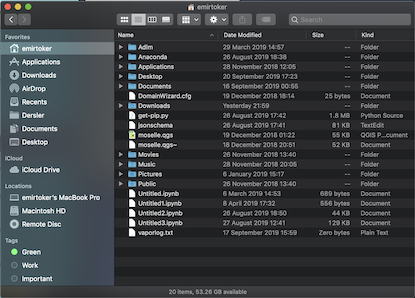
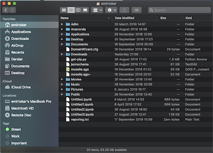
Basic GNU/Linux Commands
Frequently Used Terms
Directory Commands
File Commands
Special Commands
vi Editor, Print Commands and Symbols
Frequently Used Terms
- File and Folder
- Directory
- Parent Directory
- Working Directory
- User
- Root or Root Directory
- Environments
- Backup
- Command, Command Line, Console
- Warning, Error, Permission Denied
- Segmentation Fault
Frequently Used Terms
- File and Folder
- Directory Path, Parent and Working Directory

Frequently Used Terms
User, Root and Home Directory
whoami## emirtokerRoot directory symbol; “/”. Home directory symbol; “~”.
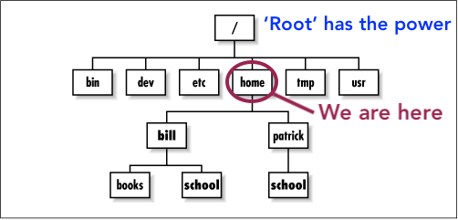
Frequently Used Terms
Environments and Backup
printenv 
Frequently Used Terms
Command Line, Command

Frequently Used Terms
Warning, Error, Permission Denied, Segmentation Fault
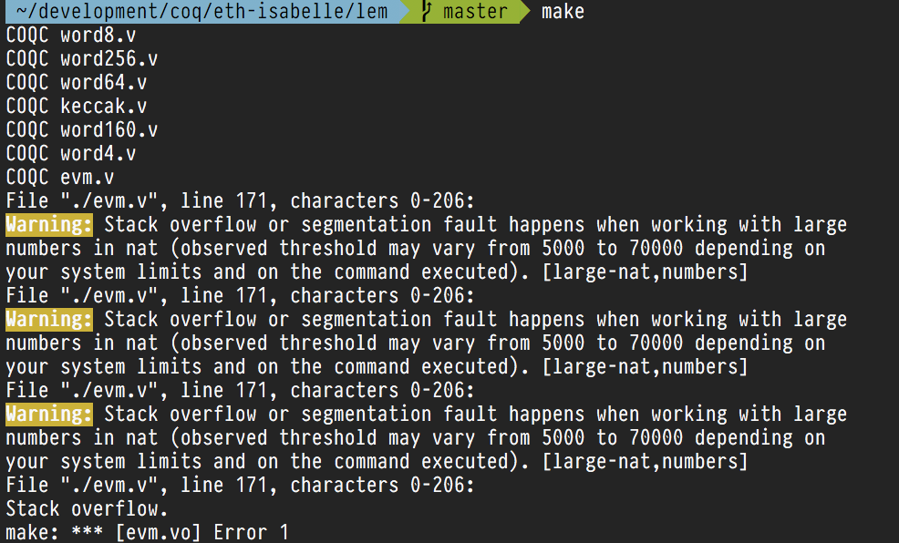
Directory Commands
pwd (Print Working Directory)
ls (List Directories)
cd (Change Directory)
mkdir (Make Directory)
Directory Commands - pwd
(Print Working Directory)
pwd## /Users/emirtoker/Desktop/Dersler/Memurluk/Software_Tools_for_Earth_&_Environmental_Science/Software_Tools_R_Github
Directory Commands - ls
(List Directories)
ls## LICENSE
## Presentation
## README.html
## README.md
## R_Home_Website
## R_Interactive_Samples_with_Shiny.Rmd
## R_Interactive_Samples_with_Shiny.html
## R_Interactive_Samples_with_Shiny_files
## R_Interactive_Training
## Software_Tools_R_Github.Rproj
## Software_Tools_for_Earth_and_Environmental_Science_Syllabus.png
## _site.yml
## about.Rmd
## additional_course.Rmd
## book.Rmd
## code.Rmd
## data.Rmd
## data_sources.Rmd
## data_structure.Rmd
## datacamp.Rmd
## dc_logo1.png
## dc_logo2.png
## dc_logo3.png
## dc_logo4.png
## dc_logo5.png
## docs
## index.Rmd
## my_r_notebook.Rmd
## ncl.Rmd
## netcdf.Rmd
## new_accounts.Rmd
## new_data.csv
## python.Rmd
## r_and_rstudio.Rmd
## r_language.Rmd
## r_probability.Rmd
## r_programming.Rmd
## r_statistics.Rmd
## rsconnect
## syllabus.Rmd
## unix_linux.RmdDirectory Commands - pwd and ls

Directory Commands - cd
(Change Directory)
cd Presentation/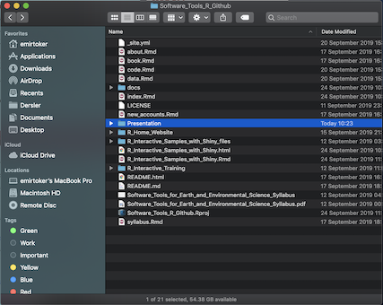 
Directory Commands - mkdir
(Make Directory)
mkdir <new_folder_name>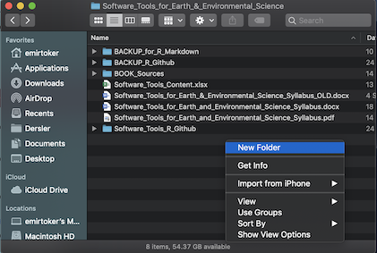 
File Commands
touch
cat (Concatenate)
rm (Remove)
cp (Copy)
mv (Move)
File Commands - touch
touch <my_new_file>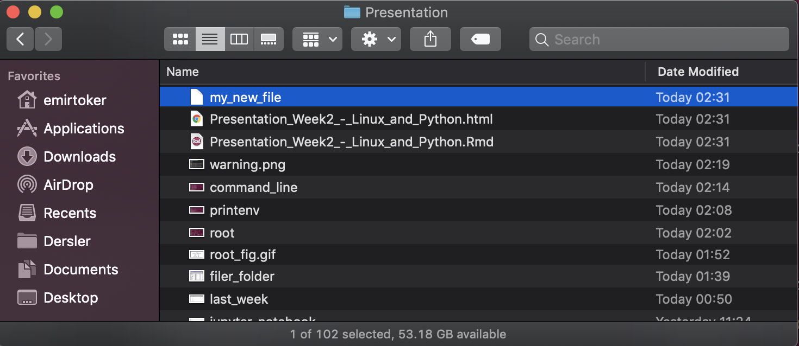
File Commands - cat
(Concatenate)
cat my_new_fileThis is my new file. Hi!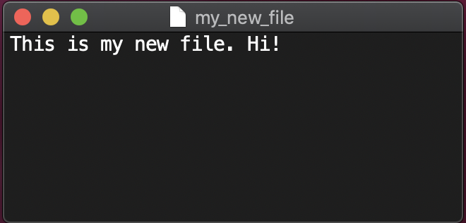
File Commands - cp
(Copy)
cp my_new_file my_new_file2
File Commands - mv
(Move)
mv my_new_file2 my_new_file3
File Commands - rm
(Remove)
rm my_new_file my_new_file3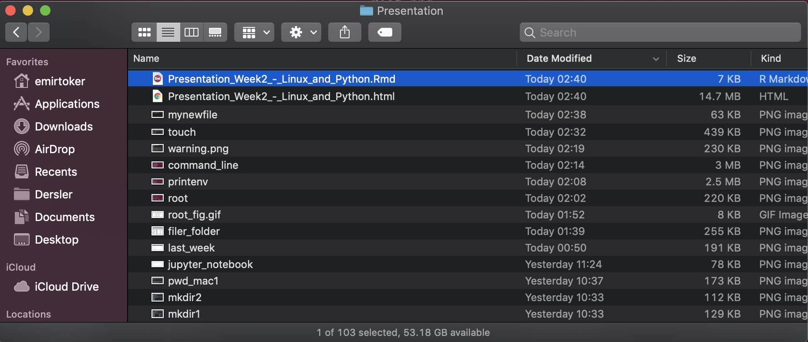
Special Commands
find
help
history
clear
date and cal
exit
Special Commands - find
find -name <name_of_file>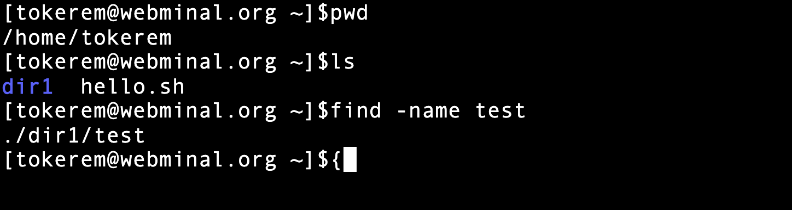
Special Commands - help
find --help
Special Commands - history
history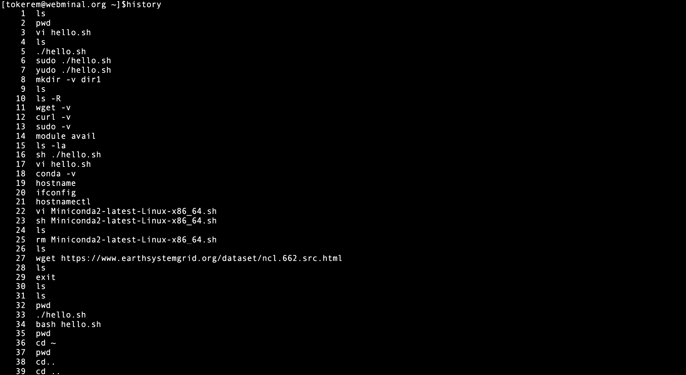
Special Commands - clear
clearSpecial Commands - date and cal
date## Sat Dec 14 15:12:30 +03 2019cal## December 2019
## Su Mo Tu We Th Fr Sa
## 1 2 3 4 5 6 7
## 8 9 10 11 12 13 _1_4
## 15 16 17 18 19 20 21
## 22 23 24 25 26 27 28
## 29 30 31
## Special Commands - exit
exit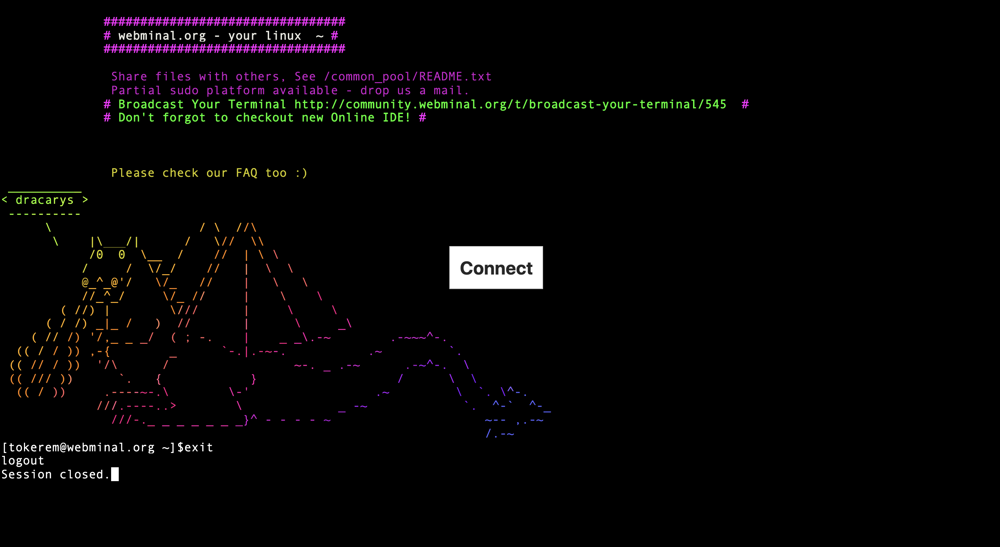
Symbols
- | (and)
- > (assing)
- $ (special variable)
- ? (an unknown character)
*(an unknown sroup of characters)
cat my_profile | sortls > my_listx=3
echo $xls my*ls ?y_list* vi Editor and Print Commands
vi
esc (default mode)
i (insert mode)
:q (just quit)
:q! (don’t save and quit)
:qw (write/save and quit)
grep and echo
head and tail
sed (stream editor)
vi Editor and Print Commands - vi
vi Editor and Print Commands - esc
(Default Mode)
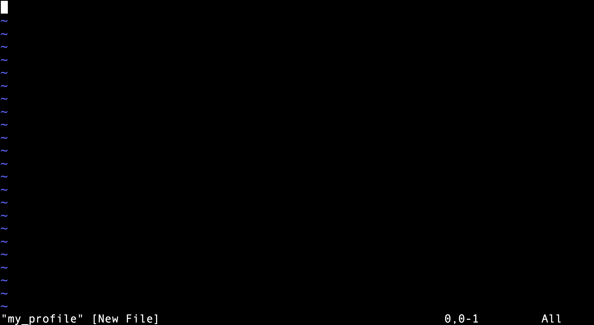
vi Editor and Print Commands - i
(Insert Mode)
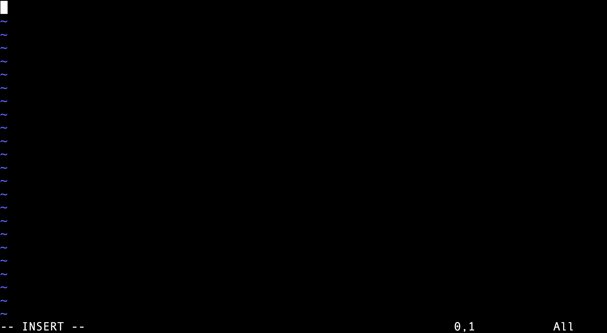
vi Editor and Print Commands - :wq
(Write/Save and Quit)
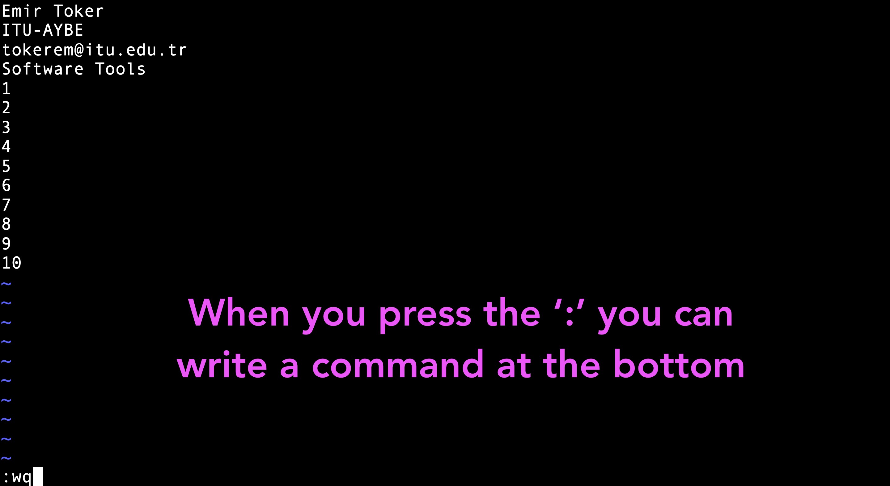
vi Editor and Print Commands - grep and echo
grep my_profilegrep ITU my_profileecho my_profilename=Emirecho $namevi Editor and Print Commands - head and tail
head my_profiletail my_profilevi Editor and Print Commands - sed
(Stream Editor)
Replacing or substituting string;
sed 's/ITU/ODTU/' my_profilesed '5d' my_profile Bash Script
touch my_bash_script.sh
vi my_bash_script.shx=5
y=3
echo $((x+y))bash my_bash_script.sh8Practice and Quiz
Practice
- Learn where you are (Print your working directory)
- Look at inside (list all documents and directories)
- Create a new folder (make a directory,
<my_new_dir>) - Go to the
<my_new_dir>(change your directory) - Create a new file (touch it, file name :
<my_new_file>) - Open this new file and write your name (vi-insert mode)
- Save your work and close the file (write + quit)
- Print your name on the screen (grep, tail, head, cat)
- Put
<my_new_file>at the parent directory (move it) - Go to parent directory (change directory with two dots)
- Create a copy, name;
<my_new_file_2> - Remove your first folder
<my_new_dir> - List all documents and directories